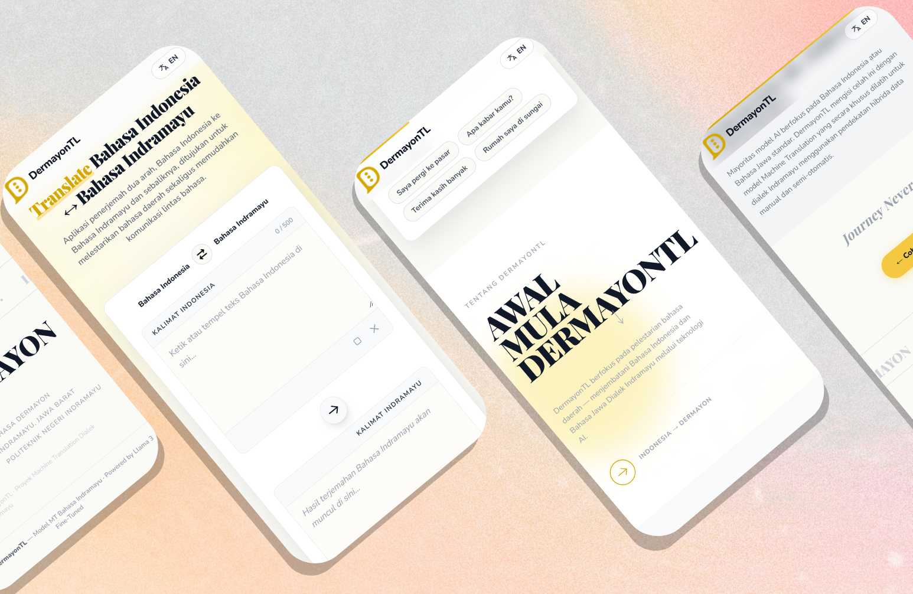
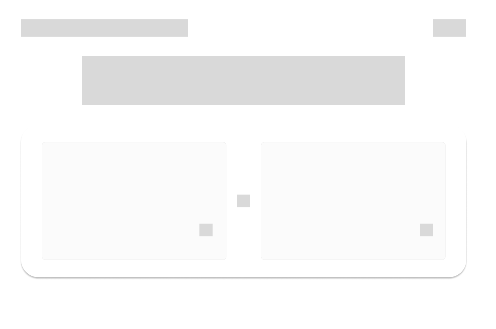
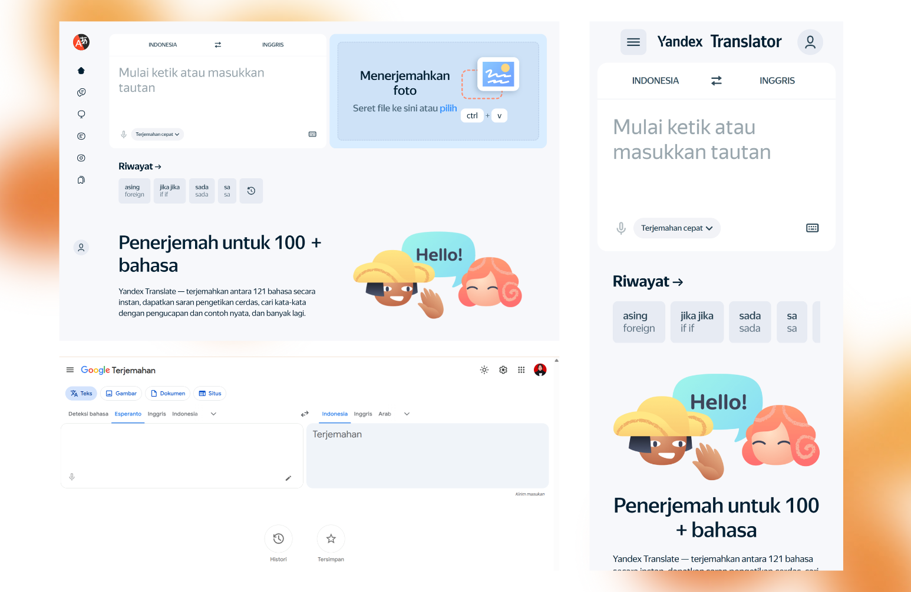
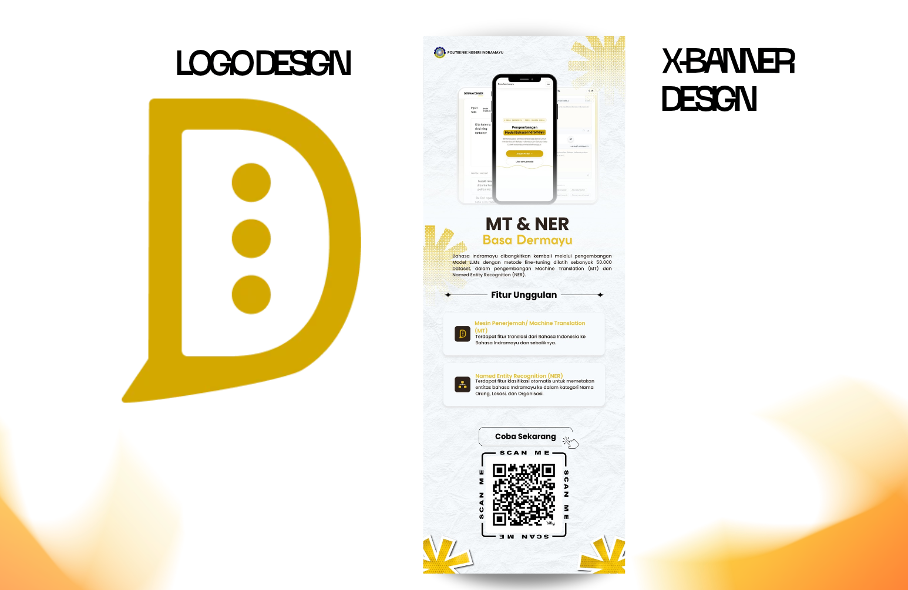
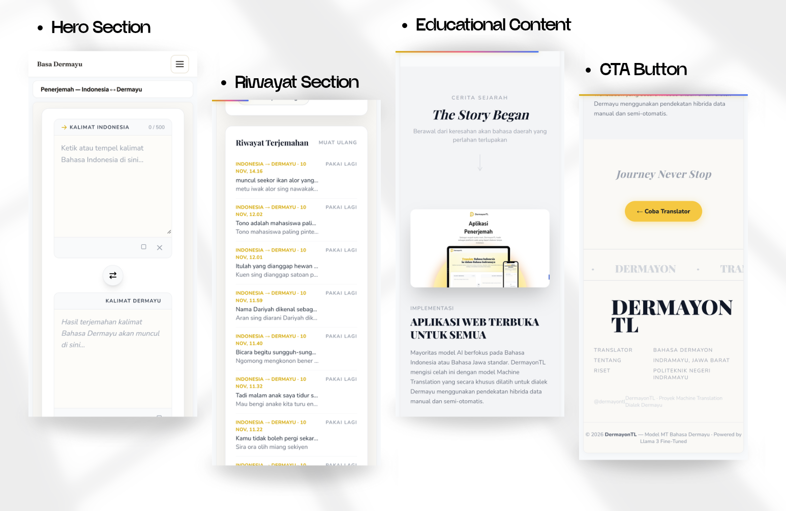

Indramayu Language Machine Translation Website
A website that puts a machine translation model for the Indramayu language in front of everyday users. I designed the translator layout, the logo and the campaign banner, and directed the build with references.
- Role
- UX Researcher and UI Designer
- Timeline
- Jan 2026 – Aug 2026
- Type
- Web app, thesis project
- Tools
- Figma, Claude Code (build)

What I designed
The low-fidelity translator layout, the logo and the campaign banner.
How it was built
Developed with Claude Code, following my layout and the website references I supplied.
Outcome
A ready-to-use website, showcased at a campus project exhibition.
The brief
The thesis was built as part of my lecturer's BIMA government-funded research. The research produced a machine translation model, and the project needed an interface that made it usable for people who are not technical.
The model behind the interface is a fine-tuned LLM trained on a 50,000-pair Indonesian to Indramayu parallel dataset.
My role
I worked as the designer and researcher on this project. I designed the translator layout and the visual identity, then used that design work to direct the development, which I built with Claude Code.
- Designed: the low-fidelity translator layout, the logo and the campaign banner.
- Directed: chose website references and gave them, together with my layout, as the brief for the build.
- Built with: Claude Code, working from my layout and references.
Low-fidelity translator layout
I started with the translate screen, because everything else depends on it. I designed it as a low-fidelity layout in Figma, settling the structure of the translator before any visual styling.

Reference-led direction
Instead of designing every screen in high fidelity, I collected existing websites as references for the look and behaviour I wanted, and gave them with the low-fidelity layout as direction for the build.

Logo and campaign banner
I designed the logo and a campaign banner for the project, so the website and its promotion share one identity.

Features
I applied a user-centered approach to the four core features, so the experience stays intuitive and easy to use.
- Automatic translation, so a visitor can translate without setting anything up.
- Two-way translation between Indonesian and the Indramayu language.
- Translation history, so earlier results can be found again.
- Educational content about the Indramayu language, so the site teaches as well as translates.

Delivery
The finished, ready-to-use website was showcased at a campus project exhibition, together with a presentation of the full design and development process.